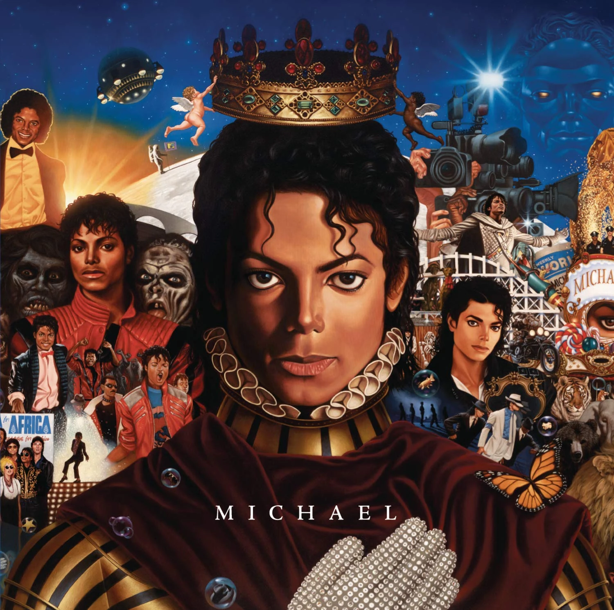
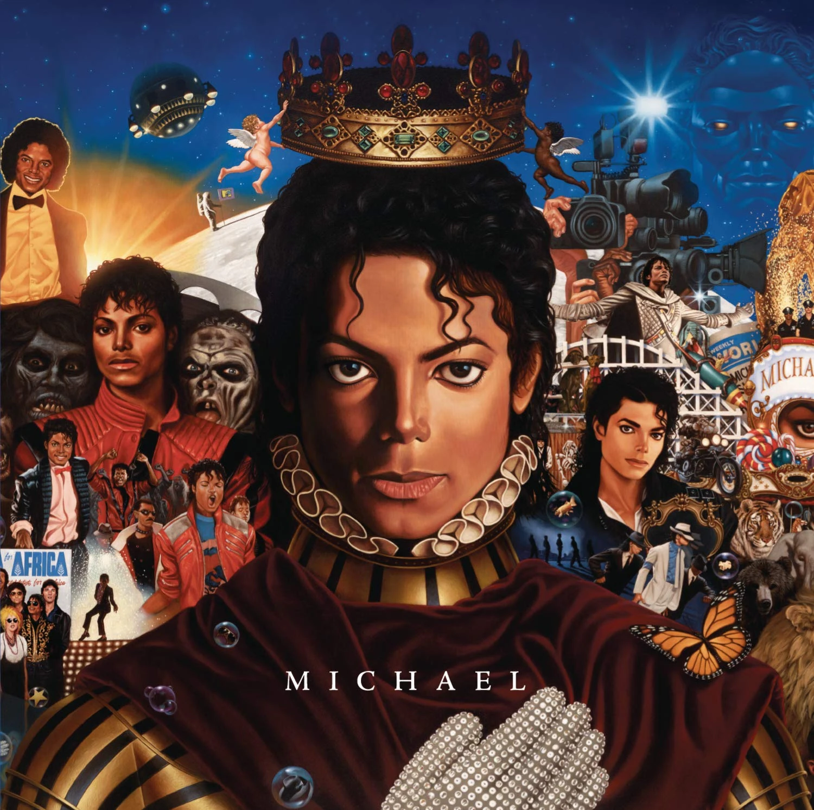

MICHAEL JACKSON
MICHAEL JACKSON
"Michael Jackson, conocido como el "Rey del Pop", fue una de las figuras más influyentes y emblemáticas de la música y el entretenimiento del siglo XX. Nacido el 29 de agosto de 1958 en Gary, Indiana, Jackson comenzó su carrera musical a temprana edad como el cantante principal de The Jackson 5, un grupo familiar formado con sus hermanos. Su talento excepcional y su carisma rápidamente lo distinguieron como una estrella en ascenso."

 
